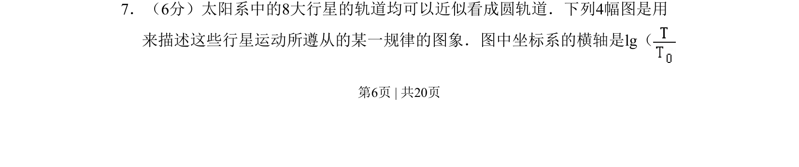
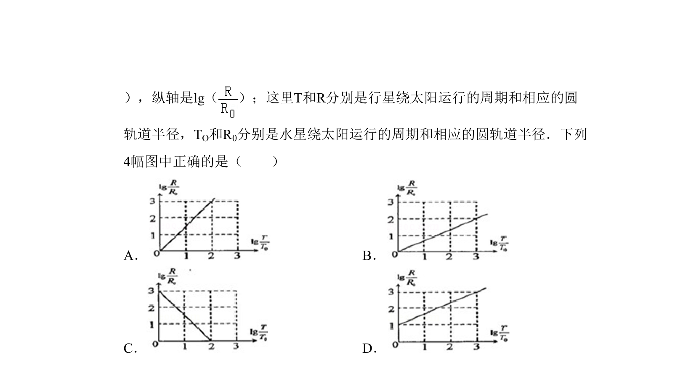
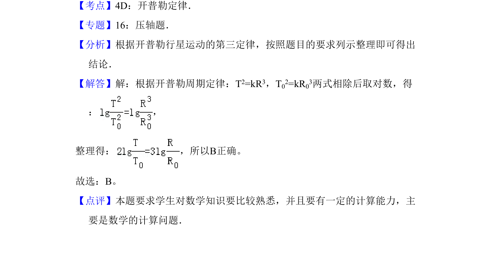

2010-新课标Ⅰ-07
吉林2010卷新课标Ⅰ不分题7题型选择难中
考点：对数函数 开普勒第三定律 图像识别
题面


摘要
考查行星运动规律的对数坐标图分析，涉及物理量线性化处理。
关联考点
答案与解析

📄 原 PDF 第 6 页：素材/真题/吉林/2008-2024·（吉林）物理高考真题/2010年高考物理试卷（新课标Ⅰ）（解析卷）.pdf
题干文本
7．（6分）太阳系中的8大行星的轨道均可以近似看成圆轨道．下列4幅图是用
来描述这些行星运动所遵从的某一规律的图象．图中坐标系的横轴是lg（
解析文本